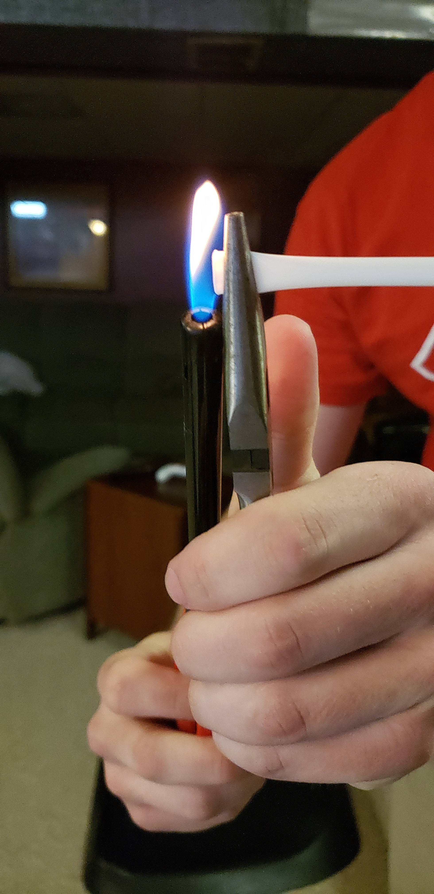

| Page One | Page Two | Page Three |
This idea came to me when I was enjoying a nice glass of Mountain Dew and decided I wanted a straw with it. I opened the straw, and when I blew on it to get rid of any excess paper leftover from the wrapper, I noticed it produced a sound similar to that of a flute. I know that's quite a reach, but it caught my attention. It was from there that I realized hey, maybe I could make an instrument out of this!
Given the straw's rather small size, I thought a conventional flute wouldn't be ideal, and thus I decided a pan flute would work best. I began by first blowing into a straw without altering it in any way. It was then that I realized the quality of the sound was pretty bad. I came to the conclusion that the straw would have to be closed on one end in order for the straw to actually sound like a flute. After doing some research, I discovered a method in which I could seal one end of the straw! To do this, I held up one end of the straw with some plyers, leaving about a millimeter of straw hanging out. Then, I took a lighter to that millimeter of straw and held it there for a few seconds. Through the beauty of physics, the end of the straw became sealed, and I was now able to produce a better sound! The picture below gives you a better idea of how I accomplished this:

Now I was ready to start the musical aspect of things. I wanted the lowest note on the flute to be a C, so I got to work on making the longest straw of the instrument a C note. Using my knowledge of the fact that a longer tube will have a lower pitch than a shorter tube, I kept cutting the straw shorter until the straw produced a C5 note. How did I know the note was C5 you may ask? Well, I recorded myself playing the straw in Audacity, and plotted a spectrum of the frequency I just played. Once I analyzed the spectrum, I consulted my Equal-Tempered Scale sheet and compared it to the frequency of a C5 note, which is roughly 523.3 Hz. Below is the spectrum for the C5 note:
I then repeated this process for the rest of the straws. Each successive note in the scale would get a shorter and shorter straw length to account for the higher pitch. Eventually, I reached the top of the scale. See the spectrum for B5 below:
Once I had all of the straws cut to their appropriate lengths, I simply taped them all together so that the instrument as a whole represents that of a pan flute.